A free explorer of the Moon’s south pole: pick a place and a date, and see on the real terrain if there is sunlight for power and Earth in the sky to call home.
Team Counter Force Ribeirão Preto, Brazil
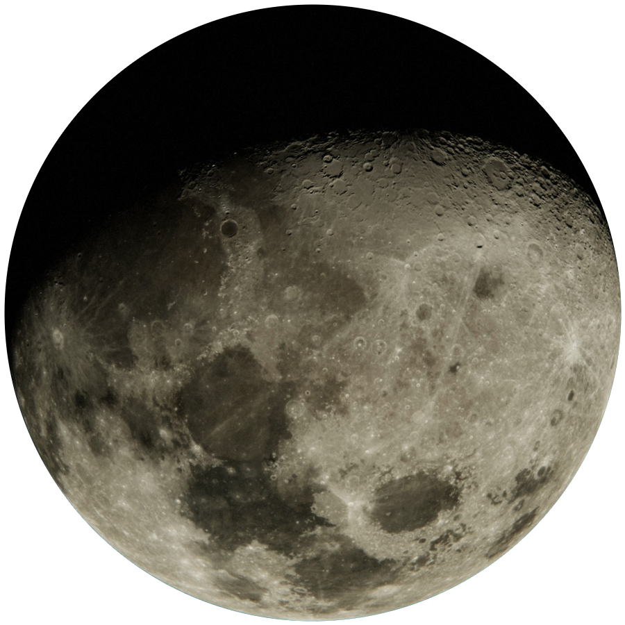
Shackleton · 21 Nov, 11:29 UTC
Sun grazing the relief
0.04° above · 58% of the disc
Same place, same hour
Earth in view
5.76° above the relief
NASA Space Apps Challenge 2026 · Lunar Landing Site Navigator1 / 7
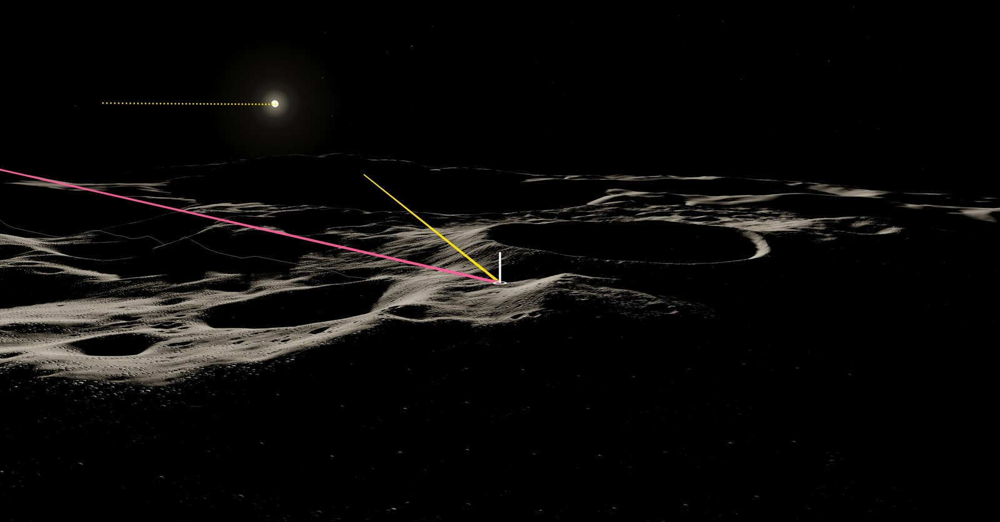
1 · The challenge and the pain
At the south pole, every metre of terrain counts.
The Lunar Landing Site Navigator challenge asks for an intuitive way to compare landing sites and dates by where the Sun and Earth sit on the horizon. The tools exist, but they are hard to read.
01
No powerThe Sun skims the horizon. A ridge 20 km away can switch off a solar panel.
02
No contactEarth sits low in the sky, and the relief can cut the line of sight home.
03
No quick answerEphemerides, terrain maps and time windows live in separate, complex tools.
March 2025 · IM-2 Athena lander
~250 m
off target, inside a cold, shadowed crater. Its solar panels could not recharge the batteries.
Planned surface mission: 10 days. It lasted under 13 hours.
Source: Astronomy magazine; Intuitive Machines
Behind: Shackleton rim in Horisite, real LOLA relief, with the rays to the Sun (yellow) and Earth (pink).
Horisite · Counter Force2 / 7
2 · Our solution
This is
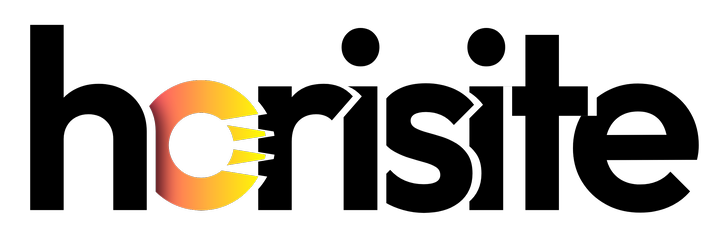
Horizon + site. A free explorer of the Moon’s south pole that shows, on the real terrain, where the light lasts and Earth stays in view.
Mission plannersStudents and teachersSpace enthusiasts
Opens in the browser · computer or phone · no sign-up3 / 7
2 · Our solution
Every pain, answered.
01
See where the light lasts.The Sun over the real relief and the light on a panel, hour by hour.
02
Know when Earth is in view.Earth’s margin above the horizon for every site and hour.
03
Get the answer in seconds.One free link, in any browser, with the best window and its dates found for you.
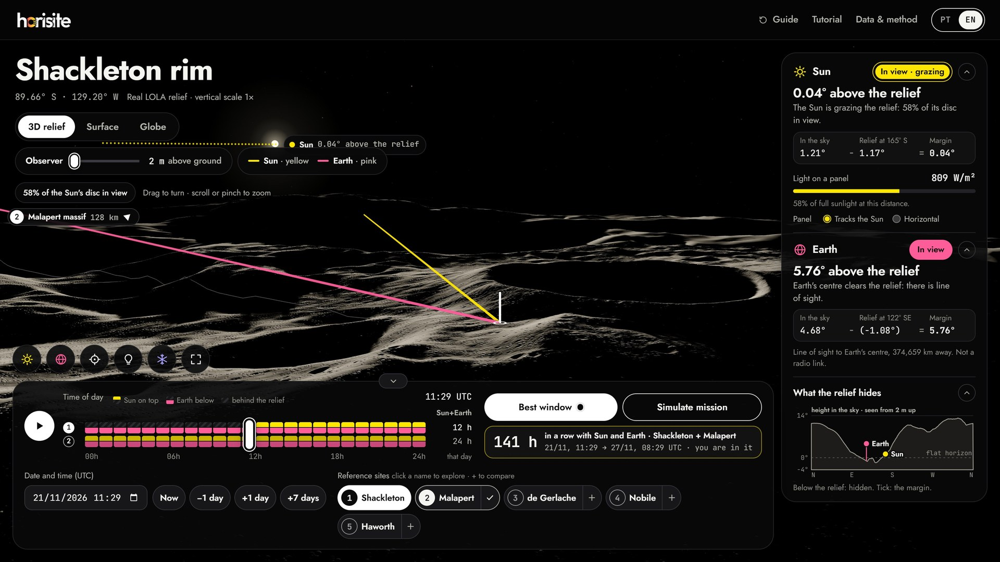
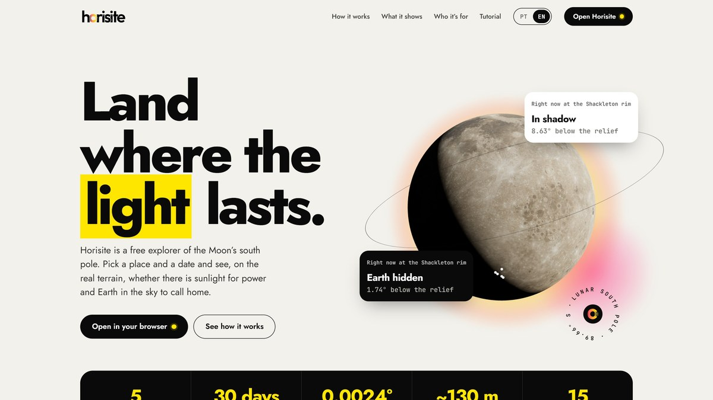
The site explains · the explorer answers4 / 7
How to use it
Six steps, one answer.
1234456
1Pick your sites. The name explores a site; + compares, up to three of five south pole regions.
2Set the moment. Any date and hour; jump a day or a week to test a delay.
3Read the answer. A verdict per body, the sum in the sky − relief = margin, and the light in W/m².
4Check what blocks them. Follow the rays over the terrain and the horizon profile.
5Play the day. The Sun+Earth bars mark, hour by hour, when each site sees both.
6Find the window, then fly it. The longest stretch with both, with its dates (here 141 h), then a mission to it.
A first-visit guide in the app walks through the same steps5 / 7
Everything it does
All the functions, one explorer.
3D relief at true scaleReal LOLA terrain, with rays to the Sun and Earth.
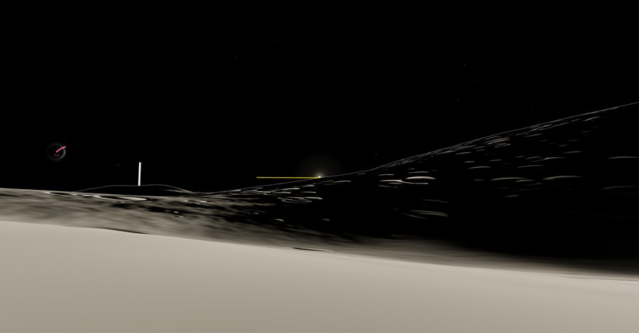
Surface viewThe horizon from 2 m up.
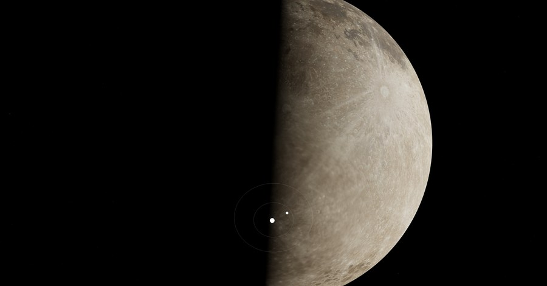
GlobeThe whole Moon, lit as now.
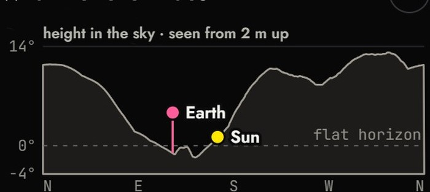
What the relief hidesHorizon profile, with the margin.
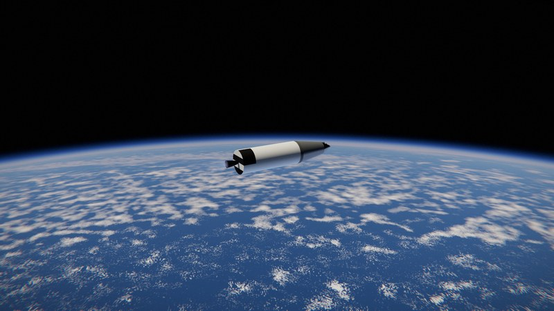
Mission simulationEarth → Moon → Earth, Apollo 11 profile.
The mission, at true scale15 stages · NASA imagery and models · physical sky and sea
Pad 39A
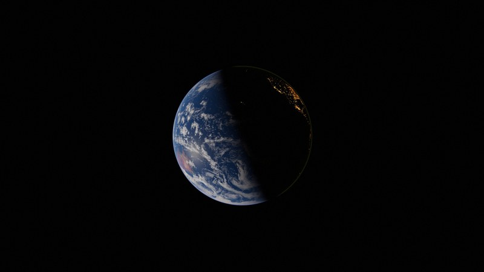
Leaving Earth
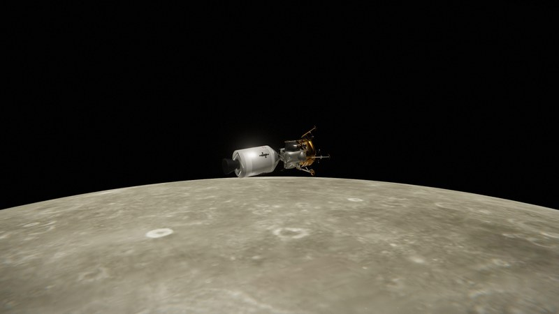
Lunar orbit
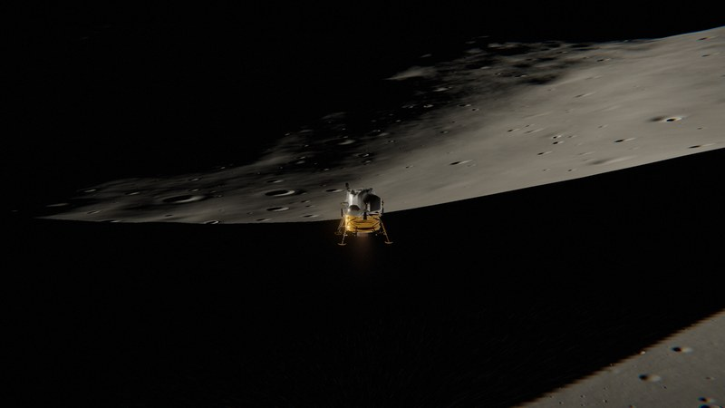
Descent
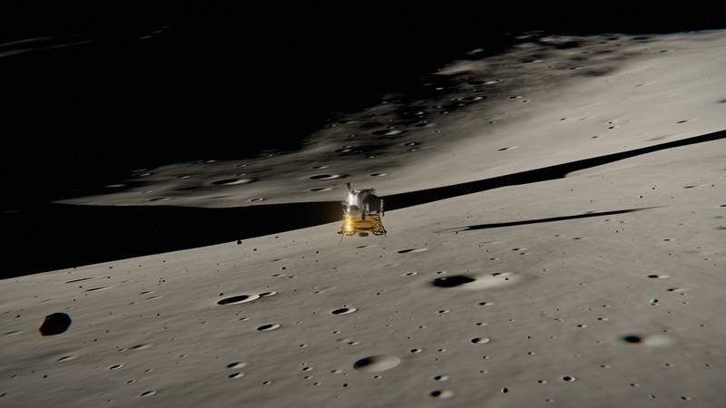
On the rimEntrySplashdown
Also: best window in 30 days · Sun+Earth bars per site · panel tracking or horizontal · observer height · first-visit guide and tutorial · English and Portuguese · works on phone
Terrain from NASA LRO/LOLA · positions checked against NASA JPL Horizons · imagery from NASA6 / 7
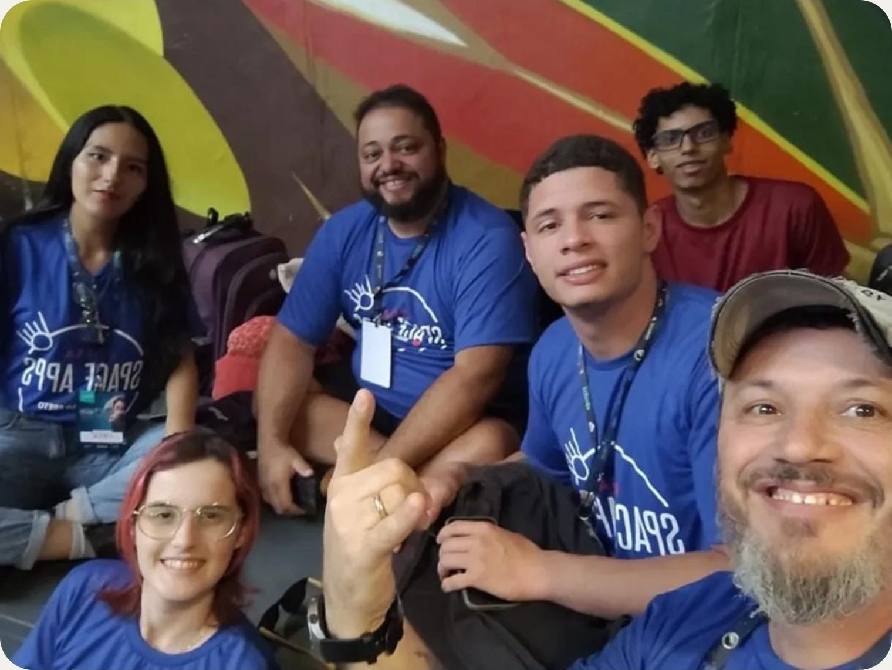
Made by
Counter Force
Ribeirão Preto, Brazil · our 3rd year at Space Apps
Marcus Fabio Galvão Facine
Victor Arantes Lino
Ricardo Coradini de Marco Moretti
Haroldo Curti e Silva
Ariane Praxedes Silva
Carla Giovana Lopez Tarqui
AI tools used in this project are declared on our project page7 / 7